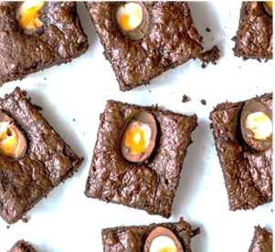

Chocolate Chip Cookie Shots
2 cups flour
1tbsp baking soda
1 pinch salt
1/2 butter
2/3cup white sugar
1/2 cup brown sugar
1 egg
1tbsp vanilla
1 chup chocolate chips
Instructions
Add butter, egg, vanilla,and sugar into mixer until fluffy. Add in flour, baking soda, and salt and mix. Add chocolate chips.
Place cookiedough into shot glass moulds. Bake for about 20-25 mins. Once cool coat cookie base in melted chocolate and then let cool.
Creme Egg Brownies
185g butter
185g dark chocolate
85g cocoa powder
3 large eggs
275g golden caster sugar
6 creme eggs cut in half
Instructions
Melt butter and chocolate together. Break eggs into the bowl and mix eggs and sugar. Then pour melted chocolate into the mix.
Sive flour over mixture then pur into your baking tin. Cook for 15 mins. Then place creme eggs and cook for another 5-10mins.
No-bake Oreo Cake
Crushed oreos
1/2cup melter butter
1 cream cheese package
1 cup sugar
1 package cool whip
21/4cups of cream
Instructions
Mix crushed oreos with melted butter then press into your baking pan for crust
Mix xream cheese and sugar together and fold the cool whip topping into the mixture. Spread this over your orea cookies mixture. Refrigerate for 1/2 hour. When cooles sprinkle more crushed oreos on top.
Cake Lollipops
106 butter
1006 caster sugar
1/2 tbsp vanilla
2 eggs
100g self raising flour
100g icing sugar
200g white chocolate
sprinkles
Instructions
To make the cake place sugar and vinalla into a bowl then fold in the flour, slowly beat eggs and add into the mixture. Place cake in 190C overn aand cook for 20 mins.
Make buttercream by mixing the butter and icing sugar together, add in vanilla and milk. Mix together. When bakes mix cake batter into balls with the butter cream then coat with melted white chocolate and sprinkles.